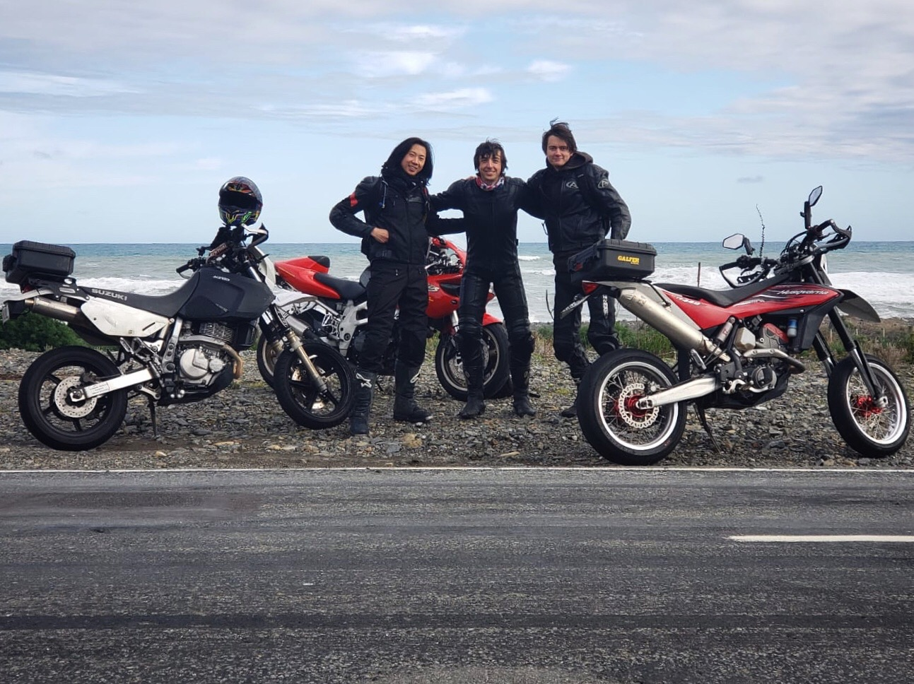

I study seismology, which means I spend my days looking at wiggles on a screen. Typically these wiggles are recorded using very expensive slinkies buried in the ground, which shake and bounce due to earthquakes.
My research is concerned with the field of adjoint tomography, which means I also spend my days generating fake wiggles using a very expensive computer and a 3D model of the ground beneath our feet. In a very roundabout way, I change parts of the model to try to line up the fake wiggles with the real wiggles, and in doing so, I am able to get better idea about the structure of the Earth. Neat!

Adjoint Tomography
My doctoral research involves seismic imaging of crustal structure using adjoint tomography. Our objective is to generate high-resolution velocity models of Earth structure for New Zealand using high performance computers and numerical modelling. The first portion of this work was recently published!

Pyatoa
Python's Adjoint Tomography Operations Assistant
I am developing an open-source Python package that facilitates automation of seismic data handling and misfit quantification in the adjoint tomography workflow.

BEACON
The Broadband East Coast Network was a temporary deployment of 20 broadband seismic instruments in the central Hawke's Bay and Tararua regions. The network was deployed to supplement receiver coverage over the Hikurangi subduction interface.

Rotational Seismology
My master's work involved analysis of amplitudes from rotational ground motion sensors. Using a large catalog of global earthquakes, we empirically derived a rotational magnitude scale to understand the charactersitics of amplitude decay for rotation signals.
Strong upper-plate heterogeneity at the Hikurangi subduction margin (North Island, New Zealand) imaged by adjoint tomography [in review]
Bryant Chow, Yoshihiro Kaneko, Carl Tape, Ryan Modrak, Nick Mortimer, Stephen Bannister, John Townend
Evidence for deeply-subducted lower-plate seamounts at the Hikurangi subduction margin: implications for seismic and aseismic behavior [in review]
Bryant Chow, Yoshihiro Kaneko, John Townend
An automated workflow for adjoint tomography — Waveform misfits and synthetic inversions for the North Island, New Zealand
Bryant Chow, Yoshihiro Kaneko, Carl Tape, Ryan Modrak, John Townend
Love wave amplitude decay from rotational ground motions
Bryant Chow, Joachim Wassermann, Berhard S A Schuberth, Celine Hadziioannou, Stefanie Donner, Heiner Igel
PhD, Geophysics (2018 - 2021)
Victoria University of Wellington (VUW)
Wellington, New Zealand
MSc, Geophysics (2015 - 2017)
Ludwig-Maximilians-Universität München (LMU) &
Technische Universität München (TUM)
Munich, Germany
BSc, Physics // Minor in German Studies (2011- 2015)
University of California, Santa Barbara (UCSB)
California, USA
Personal
Sometimes I do non-science things. In my free I rock climb, mountain bike, ride motorbikes, cook, and tinker.

Rock Climbing
I started out bouldering in the sandstone hills of Santa Barbara, California. I learned to lead (and fall) at Malibu Creek and New Jack City, and have found myself in absolutely stunning areas like Bishop, Joshua Tree, Yosemite, and the pre-alps of Bavaria. I usually attribute my keen'ness for geophysics to my love of rock climbing.

Motorcycles
I got my first bike, a Suzuki DRZ400S, at the grand ole' age of 20. I generally consider that a solid life decision. Since then I've owned a Honda CBR600F4i, and currently ride a Suzuki DR650 with a cast wheel supermoto conversion. Occasionally I throw on the knobblies and spin my tires off road.

{kind=link}